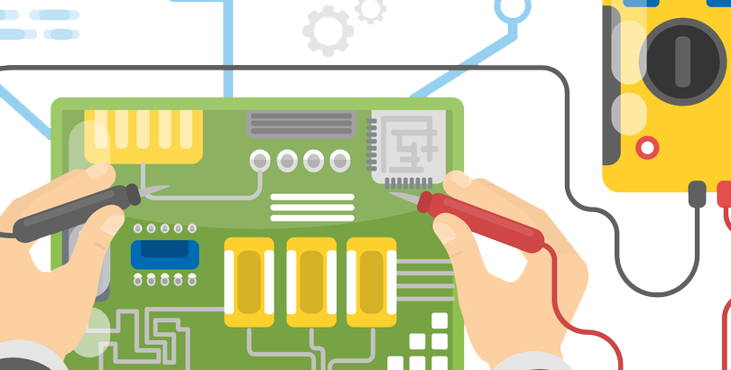

MANTENIMIENTO DE COMPUTADORAS
MANTENIMIENTO DE COMPUTADORAS
el mantenimiento de computadores puedes realizarlo periódicamente en todo equipo de cómputo que tengas en uso Ciertamente, con el fin de prevenir fallas o reparaciones costosas que puedan afectar el rendimiento y funcionamiento correcto de tus equipos, realiza el mantenimiento periódico Entonces, si tu computador lleva más de seis meses sin recibir mantenimiento preventivo o quieres conocer el estado de tu equipo; Programa el mantenimiento de computadores en Bogotá y asegura la continuidad de tu negocio o actividades.
